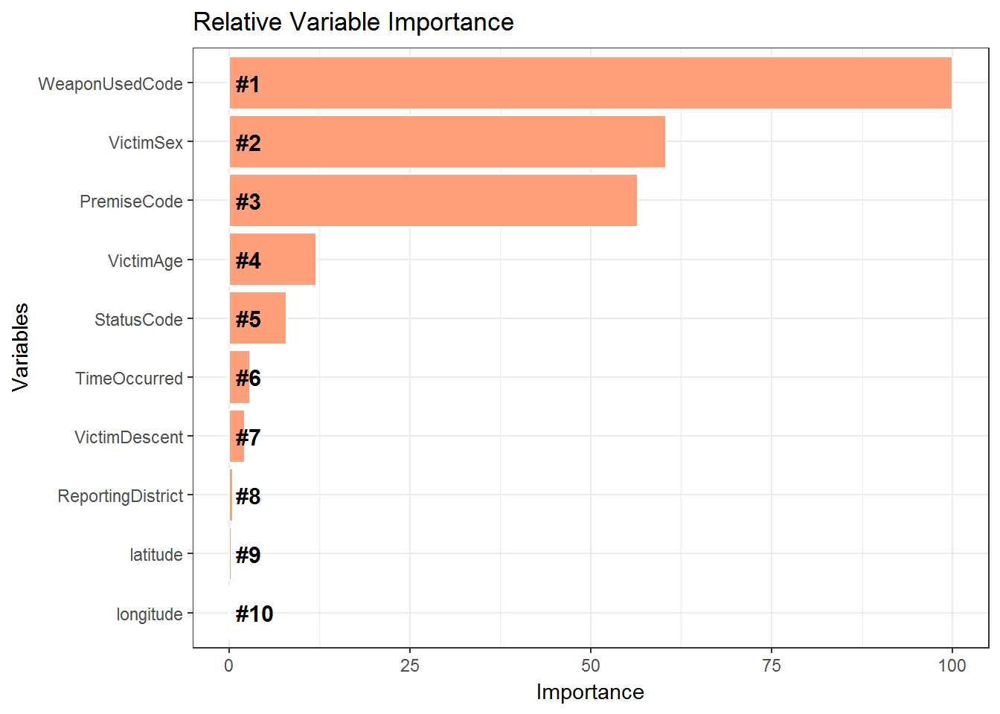

Chapter 28 Modelling
We first ask ourselves the following questions
- What do we want to predict ?
- What are the columns in the dataset ?
- What columns should be chosen for modelling ?
28.1 Prediction variable
We would like to predict the Crime Code of the Crime.
28.2 Columns in the dataset
colnames(LACrime)## [1] "DRNumber" "DateReported" "DateOccurred"
## [4] "TimeOccurred" "AreaID" "AreaName"
## [7] "ReportingDistrict" "CrimeCode" "CrimeCodeDescription"
## [10] "MOCodes" "VictimAge" "VictimSex"
## [13] "VictimDescent" "PremiseCode" "PremiseDescription"
## [16] "WeaponUsedCode" "WeaponDescription" "StatusCode"
## [19] "StatusDescription" "CrimeCode1" "CrimeCode2"
## [22] "CrimeCode3" "CrimeCode4" "Address"
## [25] "CrossStreet" "latitude" "longitude"
## [28] "MonthOfCrime" "DayOfCrime"28.3 Columns for Modelling
- We discard CrimeCode 1 , CrimeCode 2, CrimeCode 3 since they are dependent on Crime Code
- We discard the Description Columns
- We discard the Date Occurred and Date Reported Columns since we already have Month and Day of Crime
- MOCodes is discarded for the sake of simplicity
For reducing the time of execution, we reduce the dataset size to 100,000.
LACrimeDataSet = LACrime %>% select(-CrimeCode1,-CrimeCode2,-CrimeCode3,-CrimeCode4,
-CrimeCodeDescription,-MOCodes,-StatusDescription,
-Address,-DateOccurred,-PremiseDescription,
-WeaponDescription,-CrossStreet,-DRNumber,
-DateReported,-AreaName) %>%
sample_n(100000)28.4 Classification or Regression
We need to understand whether it is a Classification or Regression problem. In our case , Crime Code takes certain specific values , therefore it is a Classification problem. The next question we ask ourselves whether Crime Code takes one value or multiple values.
28.5 Values of Crime Code
unique(LACrimeDataSet$CrimeCode)## [1] 745 946 420 121 330 440 354 740 310 649 930 624 510 900 956 230 210
## [18] 626 812 220 341 860 231 810 442 761 928 815 331 237 660 763 654 668
## [35] 901 813 236 625 421 888 350 820 480 627 753 664 903 940 436 439 932
## [52] 320 437 410 653 110 343 949 450 762 623 670 235 910 943 886 902 520
## [69] 662 352 122 648 251 661 351 441 444 647 666 821 471 433 951 651 922
## [86] 805 850 920 954 760 250 756 622 434 438 933 942 950 473 870 890 485
## [103] 435 822 487 806 451 347 474 443 865 755 452 814 353 470 921 880 345
## [120] 475 652 884 924 944 931 882Learning Check
Is this a Single Class or a Multi Class Classification problem ?
We plan to use the very popular XGBoost algorithm for modelling the problem. For this we need to convert all the predictor variables to numeric.
28.6 Selected Columns and their class
colnames(LACrimeDataSet)## [1] "TimeOccurred" "AreaID" "ReportingDistrict"
## [4] "CrimeCode" "VictimAge" "VictimSex"
## [7] "VictimDescent" "PremiseCode" "WeaponUsedCode"
## [10] "StatusCode" "latitude" "longitude"
## [13] "MonthOfCrime" "DayOfCrime"28.6.1 Selected Columns class
We can examine the different Class of the variables of the LA Crime dataset.
We observe that several variables which are of Character and Factor type and these need to be converted into Numeric.
sapply(LACrimeDataSet,class)## $TimeOccurred
## [1] "integer"
##
## $AreaID
## [1] "integer"
##
## $ReportingDistrict
## [1] "integer"
##
## $CrimeCode
## [1] "integer"
##
## $VictimAge
## [1] "numeric"
##
## $VictimSex
## [1] "character"
##
## $VictimDescent
## [1] "character"
##
## $PremiseCode
## [1] "numeric"
##
## $WeaponUsedCode
## [1] "numeric"
##
## $StatusCode
## [1] "character"
##
## $latitude
## [1] "numeric"
##
## $longitude
## [1] "numeric"
##
## $MonthOfCrime
## [1] "character"
##
## $DayOfCrime
## [1] "ordered" "factor"28.7 Transform to Numeric
The following code snippet transforms all the variables to numeric.
LACrimeDataSet2 = LACrimeDataSet %>% select(-CrimeCode)
features <- colnames(LACrimeDataSet2)
for (f in features) {
if ((class(LACrimeDataSet2[[f]])=="factor") || (class(LACrimeDataSet2[[f]])=="character")) {
levels <- unique(LACrimeDataSet2[[f]])
LACrimeDataSet2[[f]] <- as.numeric(factor(LACrimeDataSet2[[f]], levels=levels))
}
}
LACrimeDataSet2$CrimeCode = as.factor(LACrimeDataSet$CrimeCode)
levels(LACrimeDataSet2$CrimeCode) = make.names(unique(LACrimeDataSet2$CrimeCode))28.8 XGBoost
We fit a XGBoost model using Cross Validation. We are using the caret package for training the model.
28.8.1 trainControl function
The function trainControl generates parameters that further control how models are created, with possible values
methodiscvfor cross validationnumberis for the number of folds used for cross validationclassProbsis a logical value determining whether class probabilities should be computed for held-out samples during resamplesummaryFunctionis a function to computed alternate performance summaries
All this documentation is obtained from the help of the caret package. Details can be found here
formula = CrimeCode ~ .
fitControl <- trainControl(method="cv",number = 3,classProbs = TRUE,summaryFunction=mnLogLoss)28.8.2 Tuning parameters
The tuning parameters are the XGBoost tuning parameters. Detailed documentation of the XGBoost tuning parameters can be found here
xgbGrid <- expand.grid(nrounds = 3,
max_depth = 3,
eta = .05,
gamma = 0,
colsample_bytree = .8,
min_child_weight = 1,
subsample = 1)28.8.3 XGBoost Model
We use the objective as multi:softprob which sets XGBoost to do multiclass classification using the softmax objective.
set.seed(13)
LACrimeXGB = train(formula, data = LACrimeDataSet2,
method = "xgbTree",trControl = fitControl,
tuneGrid = xgbGrid,na.action = na.pass,
objective='multi:softprob',metric = "logLoss",
num_class=length(unique(LACrimeDataSet2$CrimeCode)))28.9 Variable Importance
importance = varImp(LACrimeXGB)
varImportance <- data.frame(Variables = row.names(importance[[1]]),
Importance = round(importance[[1]]$Overall,2))
# Create a rank variable based on importance
rankImportance <- varImportance %>%
mutate(Rank = paste0('#',dense_rank(desc(Importance)))) %>%
head(10)
rankImportancefull = rankImportance
ggplot(rankImportance, aes(x = reorder(Variables, Importance),
y = Importance)) +
geom_bar(stat='identity',colour="white", fill = fillColor) +
geom_text(aes(x = Variables, y = 1, label = Rank),
hjust=0, vjust=.5, size = 4, colour = 'black',
fontface = 'bold') +
labs(x = 'Variables', title = 'Relative Variable Importance') +
coord_flip() +
theme_bw()
The importance of the variables have been plotted in a bar plot. we observe that WeaponsUsedCode is the most important variable determining the Crime Code. Other important variables are Victim Sex, Premise Code, Status Code, Victim Age, Time Occurred .